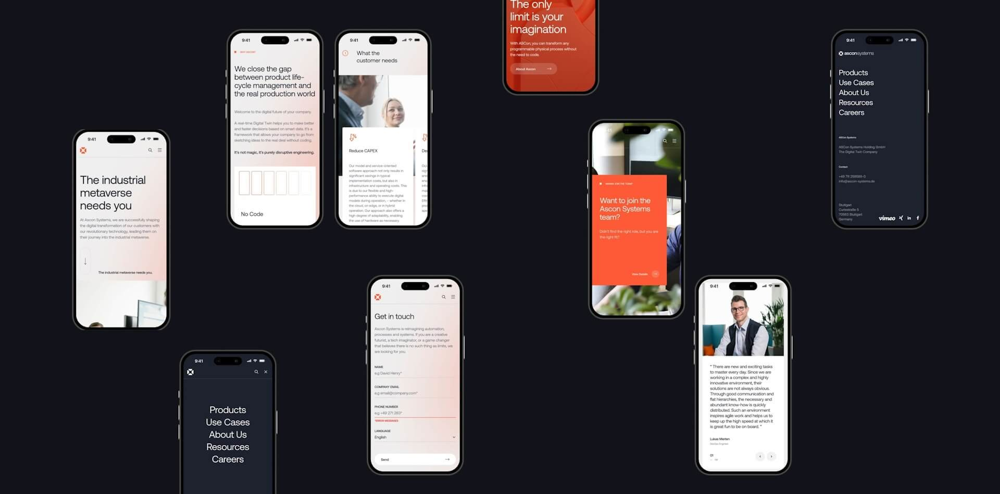

Here's a hard truth most small business owners never hear. Your website is probably losing you clients every single week, and you have no way of seeing it happen.
Here's a hard truth most small business owners never hear. Your website is probably losing you clients every single week, and you have no way of seeing it happen.
The visitor lands on your homepage. They spend 12 seconds looking around. Something feels off. They close the tab and search for a competitor. You never know they were there, you never know why they left, and you never know how much revenue walked out the door.
This post covers the five most common reasons small business websites lose visitors, based on what we see when we audit sites for new clients. None of these are abstract design opinions. They're concrete, fixable issues that cost real money. Work through this as a checklist on your own site and be honest about what's there.
Sign 1: Your site takes more than 3 seconds to load
This is the most common killer of small business websites and the one most owners don't check. 53% of mobile users abandon a website that takes more than 3 seconds to load. That's over half of your mobile traffic gone before they see a single word of your copy.
The typical culprits are oversized images, too many scripts running at once, video backgrounds that weren't optimized, and hosting plans that were cheap for a reason. A site that looks beautiful on your screen over fast home internet can be unusable on a phone with average 4G.
How to check: Run your site through Google PageSpeed Insights (free, takes 30 seconds). You want a score above 70 on mobile. Below 50 means you're bleeding visitors. The tool tells you exactly what's slowing it down.
How to fix: Compress every image before upload (TinyPNG is free). Remove scripts you don't actually need. Upgrade hosting if yours is on the cheap end. If the issue is a heavy animation or video that can't be trimmed, lazy-load it so it only triggers after the critical content appears.
The irony of most small business websites is that the features owners are proudest of are the ones slowing the site down. Sliders, auto-playing videos, animated hero sections. Strip them down or optimize them properly. Speed is not optional anymore.
Sign 2: Visitors can't figure out what you do in 5 seconds
Open your homepage. Cover the logo. Read the first thing a new visitor sees. Would a total stranger know within 5 seconds who you help and what you do for them?
If your hero section says "Empowering brands to reach their full potential" or "We believe in the power of creativity" or "Where vision meets execution," the answer is no. That's positioning copy that sounds polished but tells a visitor nothing about what your business actually does.
94% of first impressions are design-related, but the words on your hero section are inside that first impression. A vague tagline forces the visitor to work to figure out whether you're relevant to them, and most won't bother.
How to check: Show your homepage to someone who knows nothing about your business. Give them 5 seconds. Ask them to tell you what your business does and who it's for. If they can't, your hero section is broken.
How to fix: Rewrite your hero with two things. Who you help (specifically) and what outcome you deliver. "Web design and branding for Toronto service businesses that want to stop looking like everyone else" tells a visitor more in 14 words than most hero sections tell in 50.
Clarity wins over cleverness every time. Clever taglines are for brands that already have recognition. Your job right now is to be so clear a distracted visitor understands your business in one glance.

Sign 3: There's no clear next step
This is the most expensive mistake on small business websites. Visitors get to the end of reading about your services and there's no obvious thing to do next. No booking link. No clear call to action. No form. Just a vague invitation to "get in touch" somewhere at the bottom.
Every page on your site should answer one question: what do I want this visitor to do next? If the answer is scattered across six different CTAs competing for attention, or worse, buried in a contact page three clicks away, your site is working against you.
The data is clear. 70% of small business websites lack a clear call to action on their homepage. That's why most small business websites don't convert, even when the design is decent and the traffic is real.
How to check: Go through every main page of your site. For each page, write down the single action you want a visitor to take. Then check whether that action is the most visually prominent thing on the page. Not buried. Not optional. The primary thing.
How to fix: Pick one primary CTA per page. Make it visually stand out. Repeat it at least twice on longer pages (once near the top, once at the bottom, sometimes in the middle). Use action language: "Book a free consultation," "Get a quote," "Start your project." Not "Learn more," which is the weakest CTA in English.
Secondary CTAs are fine but they need to be visually subordinate to the primary one. A page with three equal-weight buttons has no call to action. A page with one strong button and two quieter links has clear direction.
Sign 4: Your site looks broken on a phone
60% of traffic to a small business site comes from mobile devices. If your site doesn't work properly on a phone, you're losing more than half of your visitors before they do anything else.
The common issues are text that's too small to read, buttons that are hard to tap, layouts that break or stack weirdly, navigation that disappears or doesn't work, images that overflow the screen, and forms that are painful to fill out with a thumb.
75% of small business websites are not fully mobile-optimized. That's not a minor gap. It's the single biggest quality issue on the small business web, and it's often invisible to owners who build and review their sites on a desktop monitor.
How to check: Open your site on your phone. Don't just glance at the homepage. Click through every main page, try to scroll, try to tap buttons, try to fill out a form. Note every friction point. Then try it on someone else's phone, because different screen sizes expose different problems.
How to fix: Mobile fixes depend on what's broken. If the site is completely unresponsive, it needs to be rebuilt or migrated to a responsive framework. If the layout mostly works but has specific issues, a developer can usually fix individual breakpoints without rebuilding. If the content is just too dense for mobile, the answer is often to simplify rather than to reformat.
The fundamental principle: design for mobile first, adapt up to desktop. Most small business sites were designed desktop-first and crammed onto mobile, which is why they feel wrong on a phone.
Sign 5: Your site has no proof anything you're claiming is true
Visitors land on your site. You tell them you're the best at what you do. You describe your services in glowing terms. You talk about your process, your values, your approach.
Why should they believe any of it?
Most small business websites are entirely claim and no evidence. No testimonials, no case studies, no client logos, no specific results, no before-and-after examples, nothing that lets a skeptical visitor verify that you actually deliver what you're promising. 75% of consumers judge a business's credibility based on website design, but design alone doesn't close the trust gap. Proof does.
The trap most owners fall into is assuming their work should speak for itself, or that asking for testimonials feels awkward, or that they'll add social proof "later." Later never comes, and the site keeps underperforming.
How to check: Count the specific, verifiable proof points on your homepage and services pages. Not "we love our clients." Actual named testimonials, real client logos, specific outcomes, measurable results, dated case studies, links to work you've completed. If the total is less than three, you have a proof problem.
How to fix: Reach out to your last five clients this week and ask for a testimonial. Make it easy, send them three questions: What problem were you solving when you hired us? What was the result? Would you recommend us to someone in a similar situation? Most clients will write something good within a day.
Add client logos if you have permission. Build one case study that walks through a real project in detail. Add specific numbers wherever you can. "Increased client bookings by 40% in the first quarter" is worth more than "helped them grow." Vague claims trigger skepticism. Specifics build trust.
If you're early-stage and genuinely don't have testimonials yet, that's a different problem. Offer free or reduced-price work to a few clients in exchange for detailed testimonials and permission to use them. It's one of the fastest ways to build social proof from zero.
Bonus sign: Your contact method is broken or hidden
I was going to limit this to five but this one comes up too often to skip. Visitors who want to contact you can't figure out how. The contact form is on a third-level page buried in the menu. The email address is an image that can't be copied. The phone number isn't clickable on mobile. The booking link is dead.
Test every contact method on your site right now. Submit the form and see if it actually delivers. Click the email and see if it opens your mail app. Call the number from your phone and confirm it rings. If any of these fail, you're losing clients who were ready to reach out.
The underlying problem
Almost every issue on this list traces back to one root cause. Small business websites are often built once, launched, and then treated as finished. Nobody audits them, nobody updates them, nobody tests them against real user behavior. Meanwhile, the web has moved on. Standards have risen. Visitor expectations have sharpened.
A website is not a brochure you print once and distribute. It's more like a storefront that needs to be cleaned, restocked, and refreshed. The businesses that treat their site as living infrastructure are the ones converting visitors into clients. The businesses that treat it as a one-time project are the ones wondering why traffic is up but leads are flat.
Frequently asked questions
How often should a small business update its website?
Content updates should happen monthly at minimum, ideally weekly if you're blogging. Full design refreshes are typically needed every 2 to 4 years. Technical maintenance (speed, security, broken links) should be checked quarterly. A site that hasn't been touched in 3 years is almost certainly costing you clients.
What's the single most important thing to fix on a small business website?
Mobile performance. If your site is slow or broken on phones, nothing else you fix will matter because most visitors are leaving before they reach anything else. Start there.
How do I know if my website is actually losing clients or just has low traffic?
Install Google Analytics (free) and look at bounce rate and average session duration. A bounce rate above 70% on your homepage and sessions under 30 seconds suggest visitors are arriving and leaving without engaging. That's a conversion problem, not a traffic problem.
Should I redesign my website or just fix what's broken?
Depends on how deep the issues go. If the fundamentals are sound (mobile works, site is fast, structure makes sense) and you just need better copy, clearer CTAs, and social proof, a refresh is enough. If the site was built poorly or on outdated tech, a rebuild is usually faster and cheaper than fixing everything piece by piece.
How much does a website audit cost?
Basic audits from agencies typically run $500 to $2,000. Some studios (ours included) offer free high-level audits for qualified prospects because the audit itself is often the start of a project. A DIY audit using this post plus Google PageSpeed Insights and Analytics costs nothing and catches most major issues.
Can I fix these myself or do I need a designer?
Depends on the issue. Speed problems and broken links, yes, usually DIY-able. Mobile issues and major design problems, usually not. CTA and copy issues, yes, if you're willing to rewrite. The fixes that require a designer are the ones where the underlying structure of the site is the problem.
Where to start
If you worked through this post and recognized your site in three or more of the signs, that's not a small problem. That's lost revenue compounding every week you don't address it.
At Ismile Creative and Digital Solutions, our web design team offers free website audits for service businesses that want a professional assessment of what's actually costing them clients. No sales pitch, just a real breakdown of what's working, what isn't, and what it would take to fix.
Book a free audit call and we'll walk through your site together.
The fastest way to grow revenue isn't more traffic. It's fixing the site that's leaking the traffic you already have.
Want to know what your site is actually doing wrong?
Book a free website audit call and we'll walk through your site together. A real breakdown of what's working, what isn't, and what it would take to stop the leak. No sales pitch, just a professional assessment.
Book a Free Audit